設計師作品展示

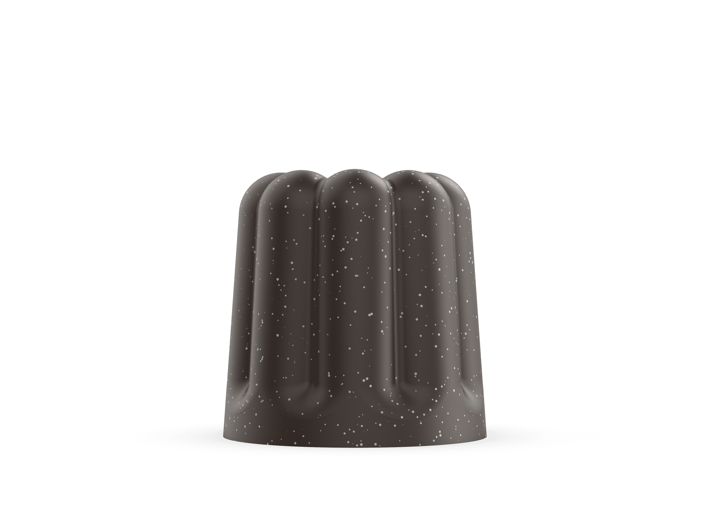
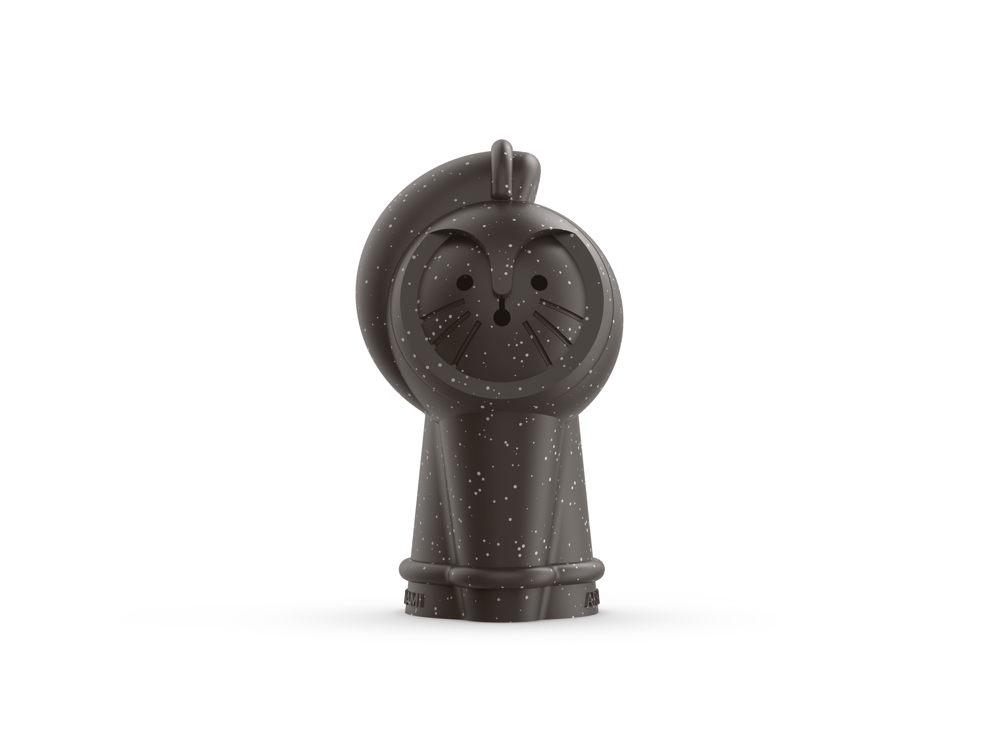
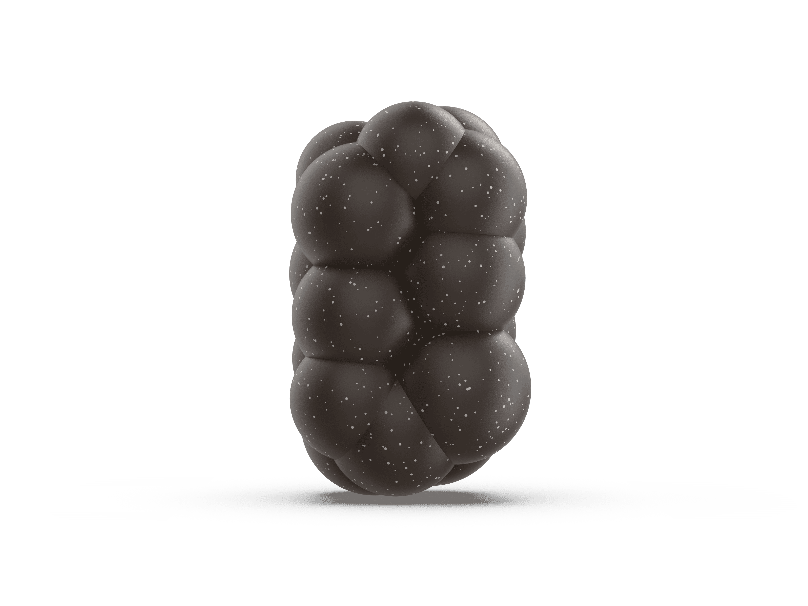
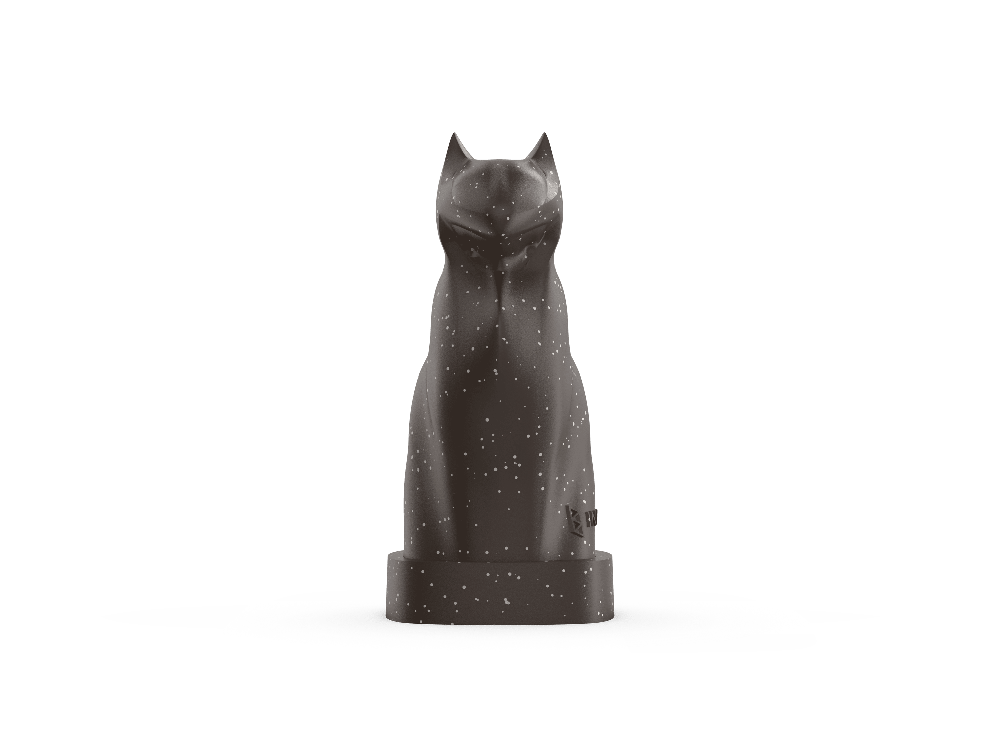
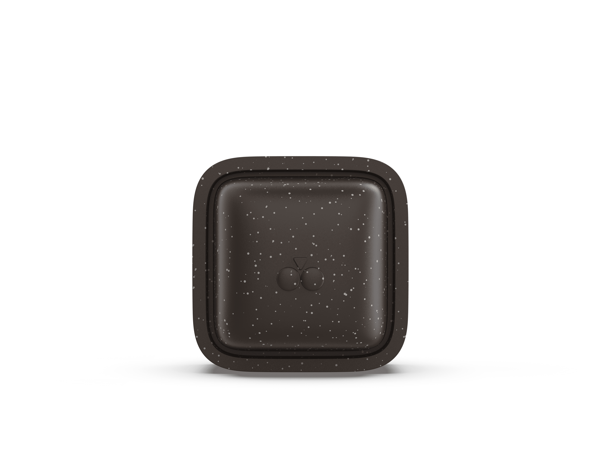
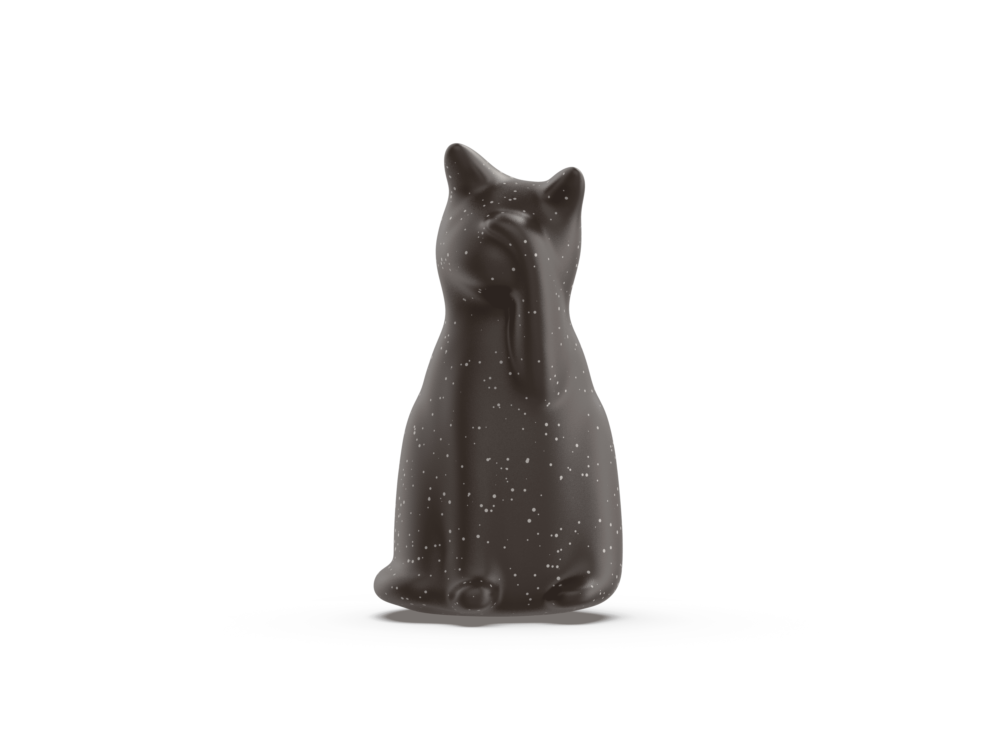
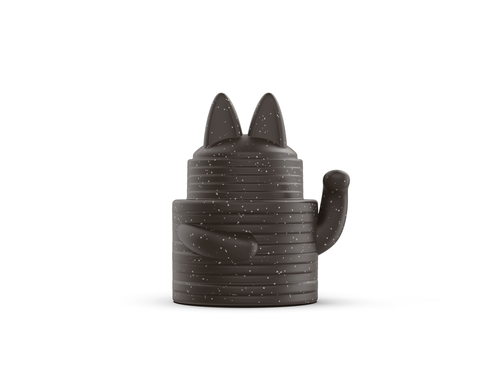
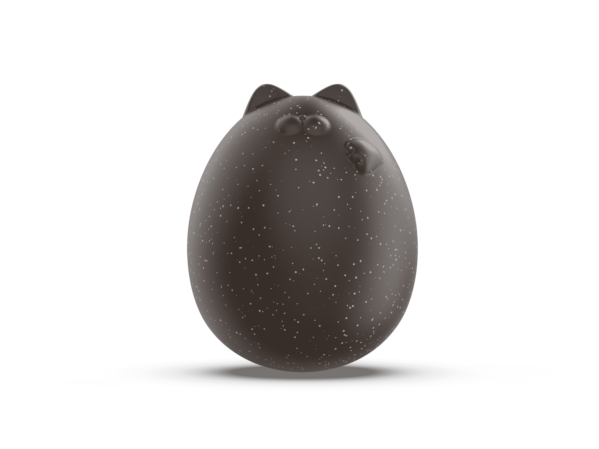
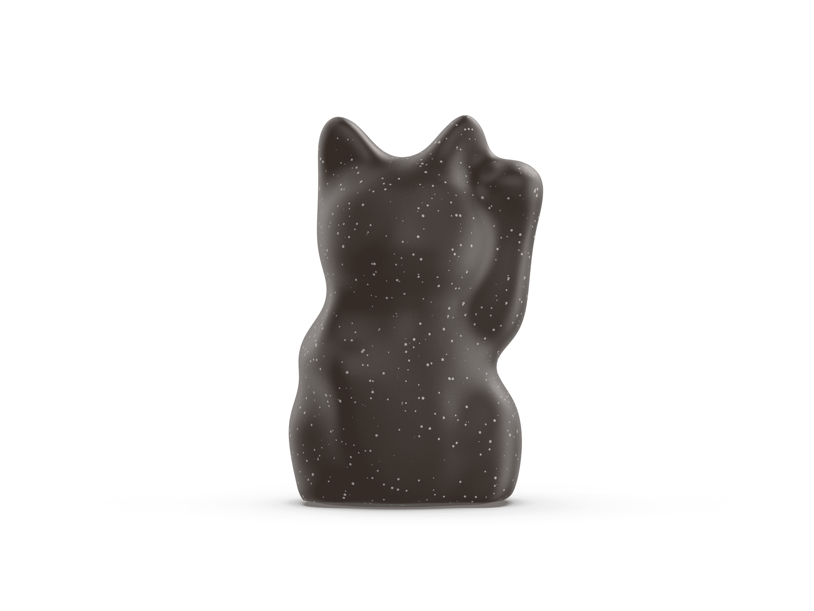
日本與台灣皆為海島國家，長期面對海洋廢棄物問題。此次計畫邀集兩地各五位設計師，嘗試以海廢中比例最高的材料——保麗龍（發泡聚苯乙烯）作為設計素材，將其轉化為具文化與敘事性的收藏公仔。
我們使用100%的保麗龍設計公仔，使用單一材料讓公仔容易進入循環系統。我們不僅將保麗龍視為設計問題的源頭，更視其為創造未來價值的起點，透過創意設計導入系統性反思，探討設計如何介入當代的塑膠循環與生產邏輯。
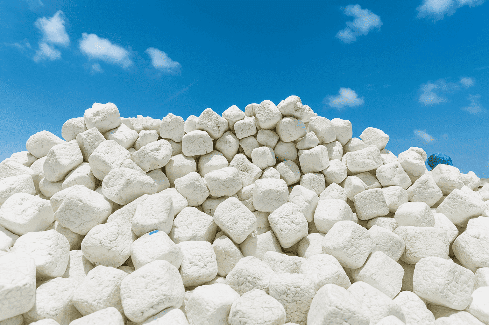
本次合作以「招財貓」為共通命題。作為日本民間信仰中象徵幸運與財富的角色，招財貓早已跨越國界，成為全球廣為人知的文化符號。我們鼓勵設計師在此基礎上，融合自身文化經驗與環境觀察，對傳統符號進行再詮釋與創新演繹。
透過設計語言的轉譯，我們希望讓觀者重新思考「價值」與「收集」的意義：在物質過剩的時代，我們真正應該珍視的是什麼？
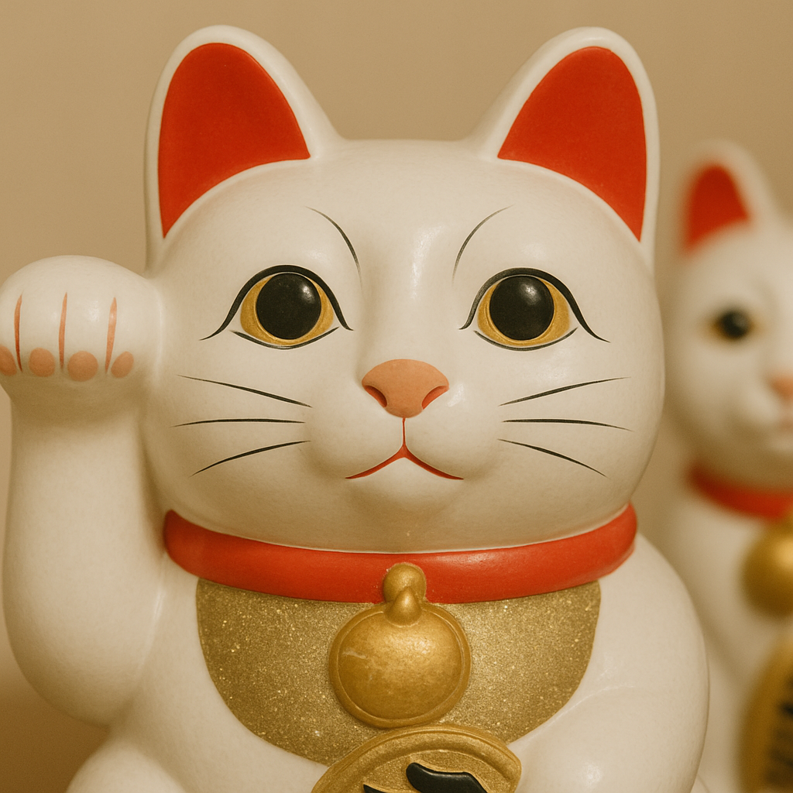
這不僅是一次永續玩具的創作，更是對未來扭蛋系統的提案：
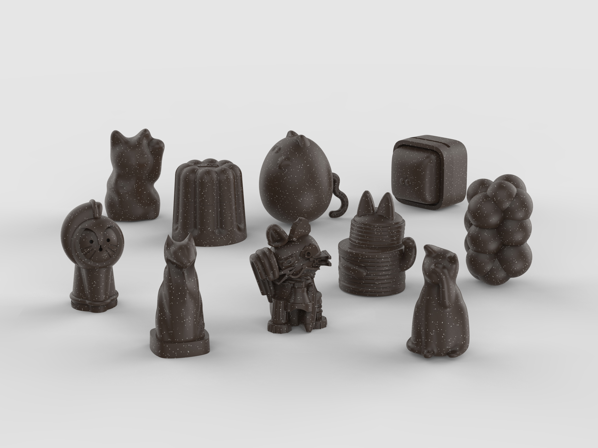








